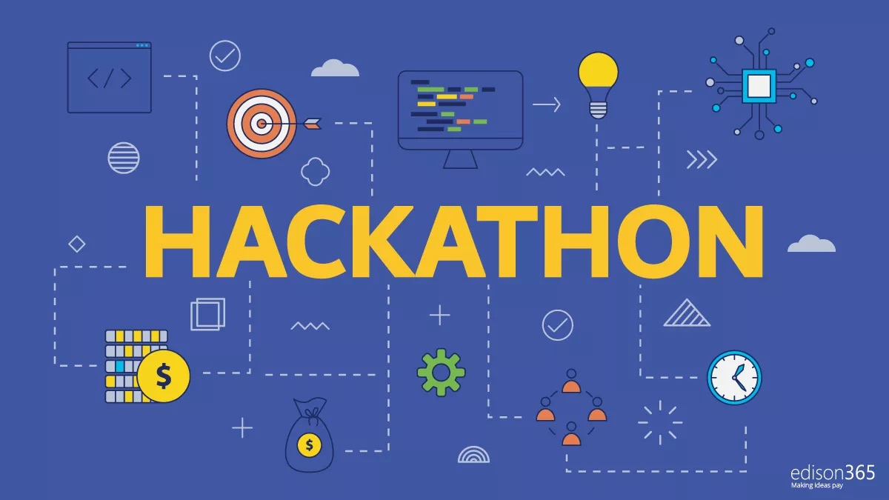
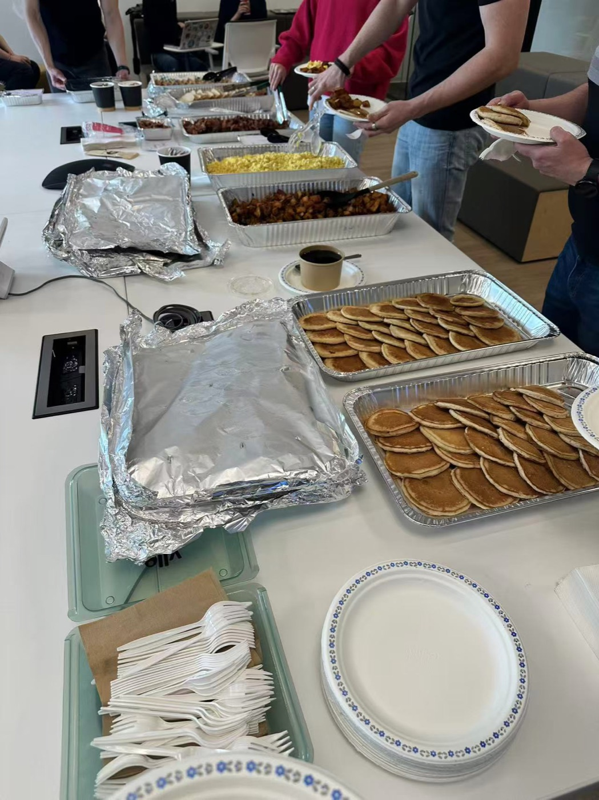
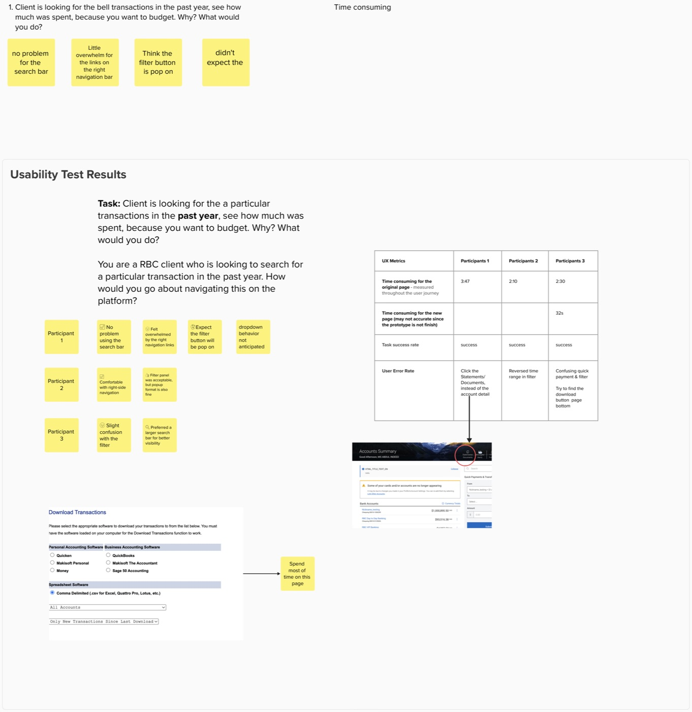

Hackathon, Creating, Collaborating
May 28, 2025
I got to join my first big event at RBC this week. I felt lucky, honestly, I’d only just started, and I was already taking part in a hackathon organized by our department.
People told me this doesn’t happen very often. They even provided food, which made it even better 😋.

On the first day I arrived early at the office. Our interactive designer had made some really cute icons for the event, including a little duck that became everyone’s favourite. I helped decorate the meeting room with the others, which made me feel more involved.
Then we split into teams for the challenge: improving RBC’s online banking page to create a better user experience.
I wanted to contribute more, so I raised my hand for usability testing. I was nervous at first, it was my first time doing it in a real company setting. Once I started, though, it felt exciting, almost like the projects I’d done in school, except this time the stakes felt real.
I wrote a simple scenario and invited a few other RBC interns to take part. Most of us use mobile banking far more than desktop, so we got fresh opinions without being too biased by familiarity. I asked them to complete a few tasks on both the old page and the new design.
During the test I tracked quantitative data and recorded their qualitative feedback:
- how long each task took
- where they got stuck the most
- how often errors happened

Afterwards I summarized the findings and presented them in our final presentation.
Once the design was finished, our developer turned the Figma prototype into a real working website. Seeing something we’d imagined actually work was a strange, good feeling. I was proud of what we pulled off.
Other groups gave great presentations too. Their professionalism and creativity impressed me, and it made me realize how much I still have to learn, and how fast and efficient experienced people can be. I hope that one day I can work with the same level of skill and confidence on my own projects.